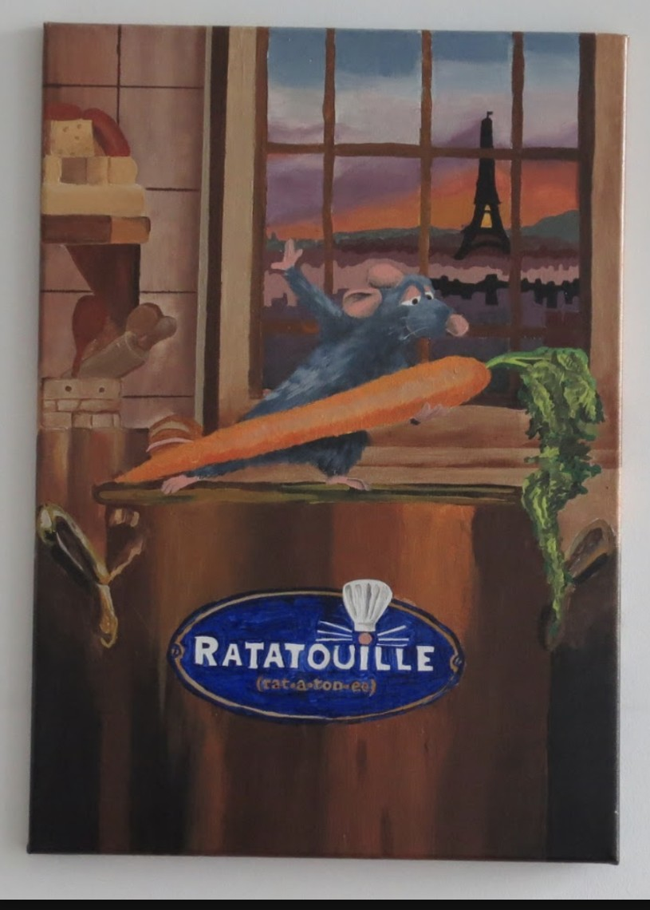
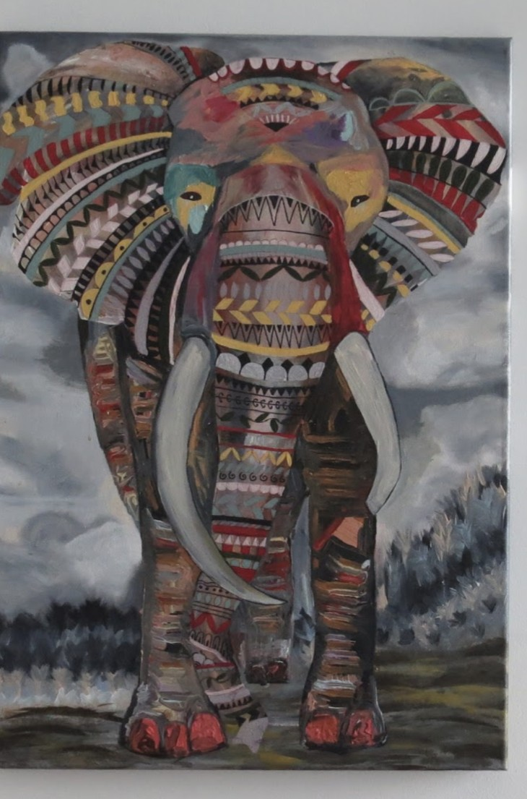

Niharika Desiraju
Healthcare • Data • Growth
NYC
Connecting healthcare data, systems, and people to drive smarter decisions and stronger partnerships.
01 / About
Niharika (nee-ha-ree-kah) is a Johns Hopkins-trained public health professional who works at the intersection of data, systems, and relationships. At Montefiore Medicine, she manages 10+ outreach workstreams, works across clinical systems including EPIC, REDCap, and ePACES, and uses SQL and Excel to automate parts of an eligibility workflow. Just as importantly, she builds strong relationships across the organization, from patients and community partners to program leadership. She keeps herself closely attuned to developments in AI and looks for smart, practical ways to apply them, streamlining workflows and surfacing insights faster, so technology augments human judgment rather than replacing it. She's a quick learner who enjoys translating data into actionable insights, presenting findings to stakeholders, and continuously growing both her technical and people-facing skills. She's especially drawn to work that turns population-level data into earlier, more targeted intervention, keeping patients healthier before a crisis point is reached.
02 / Selected Experience
Building trust and driving results across healthcare operations, data, and outreach.
Montefiore Medicine (BE-InCK NY), Project Analyst
Manage 10+ concurrent outreach workstreams at once, tracking status and prioritizing daily across competing deadlines. Drive proactive member communication at scale, running outreach campaigns to hundreds of members per cycle and logging outcomes to keep records accurate and up to date. Operate multiple clinical data systems (EPaces, RedCap, EPIC) and use SQL and Excel to help automate part of an eligibility verification workflow, minimizing manual lookup time. Segment and triage a caseload of at-risk members into three risk tiers, applying consistent criteria to target outreach where it matters most. Stay current on emerging AI tools and evaluate where they can be applied to sharpen these workflows further.
Yale School of Medicine, Pediatrics – Allergy/Immunology, Research Associate
Analyzed and visualized clinical data using SAS and Epic Slicer/Dicer to develop research insights for publications.
Johns Hopkins University (CHEW), Bystander Intervention Trainer (BIT)
Delivered persuasive presentations to 1,400+ students a year, consistently exceeding training targets and building the ability to read a room, adjust messaging on the fly, and encourage people to actually step in when it counts, whether in terms of consent or de-escalating a conflict.
OneHop Mentoring, Hopkins Connect, Content Creator
Created targeted content campaigns to reach new audience segments, growing organizational visibility and engagement through a consistent and strategic social media presence. Developed and executed a content strategy with clear channel prioritization and growth targets, managing a consistent publishing cadence across platforms to build audience and organizational visibility.
White Plains Hospital, Marketing & Community Relations Intern
Coordinated a community health conference and supported day-to-day operations for the Family Health Center Food Pharmacy, working directly with community partners and stakeholders on a hospital-run outreach program.
Johns Hopkins Medical Institute, Division of Geriatric Psychiatry, Research Assistant
Screened low-income geriatric patients regarding mental well-being and social context, gaining firsthand patient interaction experience.
03 / Skills
A blend of technical systems, data tools, and relationship-building skills.
Data
SQL · Excel · Python · SPSS
Healthcare Systems
EPIC · REDCap · ePACES
AI & Technology
AI Tools · Workflow Automation · Predictive Analytics
Communication
Stakeholder Engagement · Presentations · Outreach
Creative
Canva · PowerPoint · WordPress · Content Strategy
04 / Selected Work
Selected work spanning data automation, research, and technology design.
HRIDAY: Real-Time Heart Attack Alert App Use Case
As a Research Apprentice in the Innovation Office at IBM Watson, Niharika designed and scoped HRIDAY, a predictive analytics tool for early cardiac risk detection, delivering real-time heart attack risk alerts as part of a competitive high school science research program.

Weill Cornell Medical College: Friedreich's Ataxia Research
As a Research Assistant at the Brain & Mind Research Institute, Niharika contributed to published research on Friedreich's Ataxia as part of a competitive high school science research program, assisting with tissue harvesting, nerve fiber preparation for immunohistochemistry, statistical analysis, and qPCR and Western Blotting techniques.

Outside of Work
Niharika is an avid painter and a classically trained Bharatanatyam dancer of over ten years, culminating in her Arangetram in 2018. Both practices continue to shape how she approaches her work: with patience, precision, and an eye for detail.




Want the full story?
Password protected résumé, available on request.
05 / Let's Connect!
Have an opportunity or question? Niharika would love to hear from you.
This opens your email app with the message pre-filled, sent to her email.